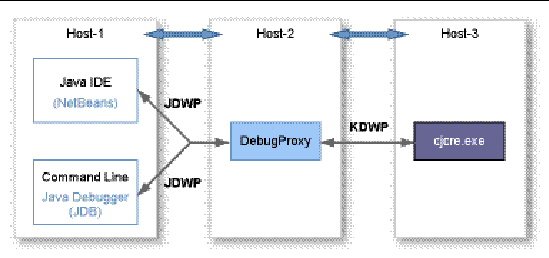

| Development Kit User’s Guide, Java Card 3 Platform, Version 3.0.2, Connected Edition |
| C H A P T E R 11 |
|
Debugging Applications |
This chapter describes the Debugger tool (debugproxy) for Java Card 3 platform application developers and how to use it as a separate tool with any Java technology-enabled IDE. Using the Debugger, developers can debug their applications in any Java technology-enabled IDE.
The following diagram illustrates the debugger architecture for cjcre.
FIGURE 11-1 Debugger Architecture

The Java Debug Wire Protocol (JDWP) used by the IDE is heavy for a small VM such as that provided by cjcre. Consequently, cjcre uses KVM Debug Wire Protocol (KDWP) to provide a minimum set of debugging capabilities. The Debugger tool, debugproxy, translates and sends the translated JDWP commands from the IDE to cjcre in KDWP format. Responses from cjcre are converted into JDWP format by debugproxy before it sends them to the IDE.
The communication between cjcre, debugproxy, and the IDE happens through sockets. Socket-based communication enables developers to debug cjcre from remote hosts. For example, cjcre could run on machine1, debugproxy could run on machine2, and the IDE could run on machine3. Developers can also run cjcre, debugproxy, and the IDE on same host.
Ports used by IDE communication to and from debugproxy, and debugproxy communication to and from cjcre, are distinguished by the names “listen port” and “remote port” respectively.
Use the Debugger tool’s functionality by starting debugproxy (debugproxy.bat), then attaching it to a Java technology-enabled IDE, and then starting cjcre with the -debug option. The file debugproxy.bat is located in the directory JC_CONNECTED_HOME\bin. Various command line options are available to configure the Debugger and cjcre. See cjcre.exe Command Line Options for additional details on the cjcre commands.
The command line interface for the Debugger has the following syntax:
debugger.bat subcommand [option]
The following is a list of the subcommands for the Debugger:
Use the debug subcommand to debug a file at a specified location.
The copyright subcommand displays the detailed copyright notice. There are no options associated with this subcommand.
The help subcommand displays information about the Debugger command. Options are used with the help subcommand to specify the information that is displayed about each subcommand. For example, to display detailed help about the debug subcommand, type:
debugproxy.bat help debug
This section describes how to debug an application using the development kit command line tools.
To fully utilize the capabilities of the Debugger, the application’s class files must first be compiled with debug information. This is done by specifying the -g flag for javac when compiling the source files. These class files must be available to debugproxy so the line number information can be retrieved while stepping through the code. All source files must be compiled using the -g option to generate the debug information in the class files. If the -g option is not used, it is not possible to set breakpoints in the source code.
The Debugger needs to know the location of class files being debugged. The Debugger can be run from the command line using the following syntax, for example:
debugproxy.bat debug -c myapp.war
When starting debugproxy, you can include the -c (or --classpath) option in the command line to specify the path of the class files to be debugged. In this example, myapp.war is the location of the class files to be debugged.
This procedure is performed from within the IDE and so the details depend on the IDE used. If your IDE requires the Debugger to be attached, refer to the documentation provided with the IDE.
This -debug option of cjcre enables debugging functionality in cjcre. Without this option, debugging functionality is disabled in cjcre. See cjcre.exe Command Line Options for additional details on the cjcre commands.
Break points must be set in the application source code. The exact procedure depends on the IDE used. The following steps are typical for most IDEs. Refer to the documentation provided with your IDE for specific instructions.
1. Display the source code of the application in the IDE.
2. With the source code displayed in the IDE, open any file and set break points where required.
Break points can be set at any time, even before attaching the Debugger.
3. Step through the code by executing the application from within the IDE.
When a break point is hit, the IDE stops execution and highlights the current line. Depending on the IDE being used, there are various options available to developers for stepping over or stepping into the code.
| Development Kit User’s Guide, Java Card 3 Platform, Version 3.0.2, Connected Edition | 12-14-09 |
Copyright © 2009 Sun Microsystems, Inc. All rights reserved.